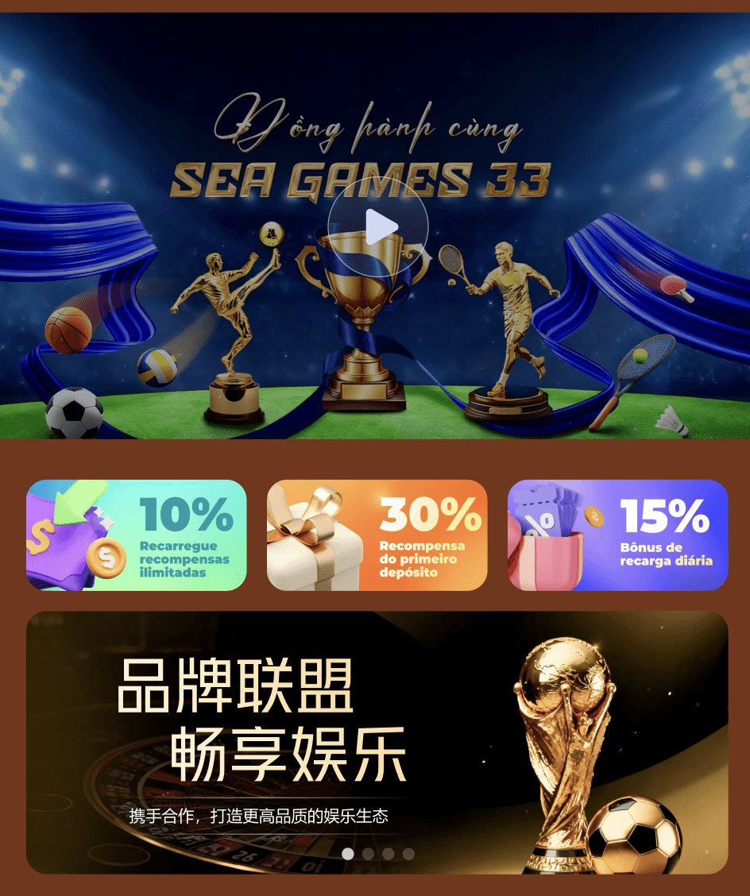

未点击“翻译其他语言”时，系统将自动以当前编辑内容作为其他语言的兜底展示内容。
一、首页宣传视频配置
1、新增
（1）展示语言：先选择语言，选择后在联盟客户端对应语言下展示
（2）展示位置：提供5个位置配置
（3）宣传视频：按照提示上传
（4）视频封面图：按照提示上传
（5）加载完成后自动播放：开关
2、新增后的内容状态为【草稿中】，点击【发布】状态改为【发布中】，客户端将看到此条信息
3、【发布中】的内容支持修改、下架、删除
4、支持批量发布、批量下架、批量删除
注意：客户端对应语言下只展示1条视频，发布中的视频配置多个只会展示第一条
二、Banner配置
1、Banner样式：提供5种样式选择，
2、新增
（1）展示语言：先选择语言，选择后在联盟客户端对应语言下展示
（2）Banner样式：参考当前Banner样式，只有一致时才会在客户端生效
（3）Banner名称：只在后台展示
（4）Banner图：按照提示上传
（5）展示时间：选择后客户端在指定时间内生效
（6）点击跳转：下拉后按照需求选择
（7）播放时间：Banner轮播时间
3、新增后的内容状态为【草稿中】，点击【发布】状态改为【发布中】，客户端将看到此条Banner
4、【发布中】的内容支持修改、下架、删除
5、支持排序，支持批量发布、批量下架、批量删除
